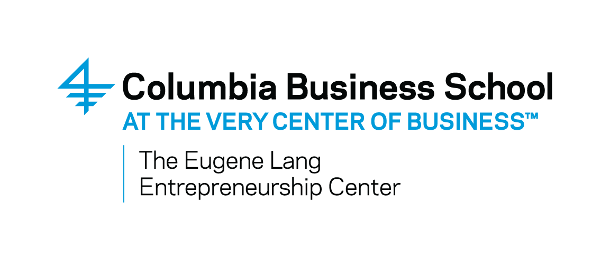

Rob Terrin
Hi, 👋. I'm Rob, and I'm sharing everything I've learned about business, risk and public policy.
Subscribe
Analytical. Optimistic. Deeply curious.
Currently, I work on strategy, M&A, alliances and talent for Deloitte. Before that, I ran Tail Risk, a cybersecurity services business. In grad school I built risk models at RMS, the leading provider of risk models to the reinsurance industry. I also did strategy for Better Mobile Security, a mobile security startup. I began my career building cybersecurity systems for Government clients.
My Work Has Appeared in:

Interested in cybersecurity, business strategy, or getting some feedback on your
startup idea? Let's talk! I also turn earned income into passive losses by dabbling
in angel investing.
Subscribe to my newsletter and be the first to know:
Subscribe to my newsletter and be the first to know: